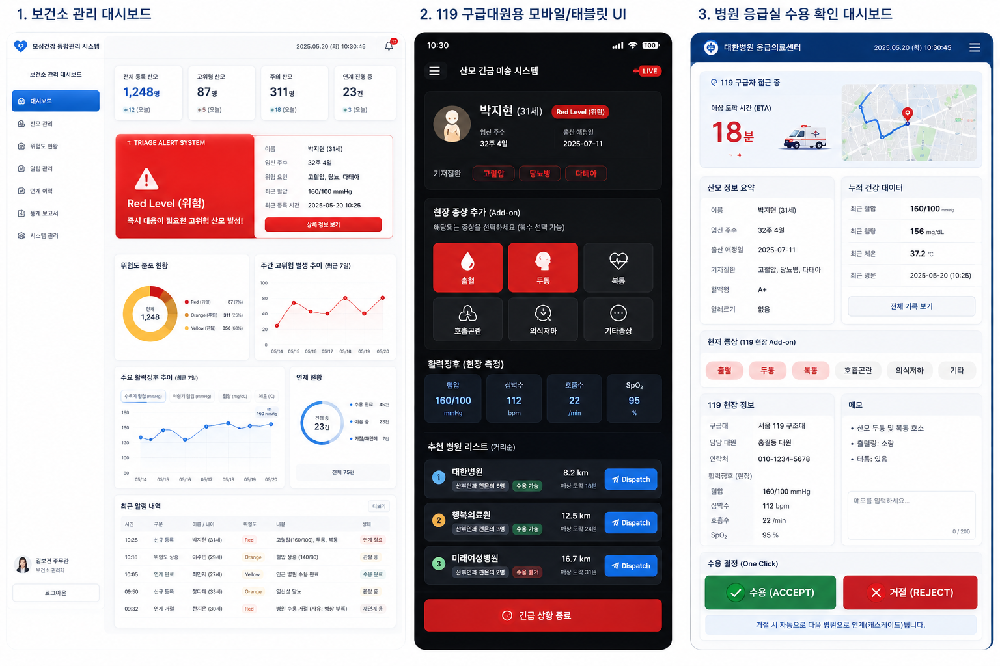

맡은 역할
5인 팀의 기획을 맡아 ERD 설계, 위험도 스코어링 로직, 유저플로우 기획 등 전 과정을 리딩했습니다. 해커톤 주제인 "AI 전환 시대, 인간의 역량을 확장하는 디지털 서비스 개발"에 맞춰, 보건소 · 119 · 병원이 이미 보유한 데이터를 연결해 응급 대응의 골든타임을 지키는 방향으로 문제 정의부터 화면 설계까지 팀을 이끌었습니다.
문제 정의
초산 연령 증가와 고위험 임신 증가로 의료 수요는 늘고 있지만, 지방 산부인과 폐업과 산과전문의 감소로 실제 분만 인프라는 줄고 있습니다. 보건소 · 119 · 병원은 각자 관련 제도와 시스템을 운영하지만 같은 산모에 대한 정보를 유기적으로 공유하지 못합니다. 그 결과 응급 상황에서 가장 중요한 자원인 골든타임이 치료가 아닌 "수용 가능한 병원 탐색" 과정에서 소모되고 있었습니다.
솔루션
맘스세이프는 새로운 의료기관이나 앱을 만드는 사업이 아니라, 기존 공공 모자보건 체계 사이에 위치한 "의사결정 지원 미들웨어"입니다. 고위험 산모의 상태와 지역 의료 인프라 정보를 통합 분석해 위험도 스코어를 산출하고, 치료 적합 병원 우선순위를 추천하며, 응급 상황 시 필요한 정보를 현장에 제공합니다.
핵심 기능
- 통합 위험도 스코어링 임상 정보(고위험 임신질환 여부, 임신 주수, 혈압, 혈당 등), 인구학적 정보(연령, 초산 여부, 기저질환 등), 지역 · 의료 접근성 정보(분만취약지 여부, 응급 이송 예상 시간 등)를 통합 분석해 위험도를 지속적으로 갱신
- 보건소 트리아지 지원 위험도 점수 기반으로 일반 모니터링 · 유선 확인 · 집중 관리 대상을 분류해 담당자 의사결정 지원
- 치료 적합 병원 우선순위 추천 진료 가능 여부, NICU 보유, 권역센터 여부, 이송 거리를 종합 반영해 가장 가까운 병원이 아닌 가장 적합한 병원을 제안
- 응급 대응 지원 구급대원과 의료진이 산모 위험도, 주요 질환 정보, 추천 병원 우선순위를 현장에서 즉시 확인
- 이동형 고위험 프로필 산모가 체류 지역을 직접 업데이트하면 해당 권역 기준으로 병원 우선순위가 재계산되고 응급 대응 네트워크에 사전 공유. 상시 위치추적 없이 본인 입력 기반으로 개인정보 부담을 최소화
화면 설계
보건소 관리 대시보드, 119 구급대원용 모바일 UI, 병원 응급실 수용 확인 대시보드 세 화면을 중심으로 유저플로우를 설계했습니다.

결론
대한민국에는 이미 고위험 산모를 위한 기준도, 병원도, 응급 이송체계도 존재합니다. 맘스세이프는 부족한 인프라를 새로 만드는 것이 아니라, 제한된 의료 자원을 데이터 기반 의사결정으로 가장 효율적으로 활용하도록 지원하는 공공 안전망입니다.